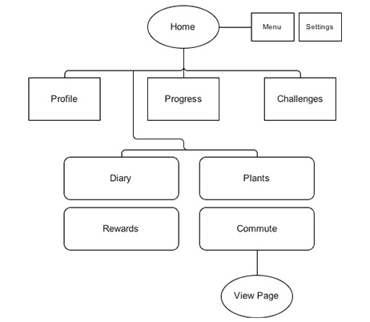
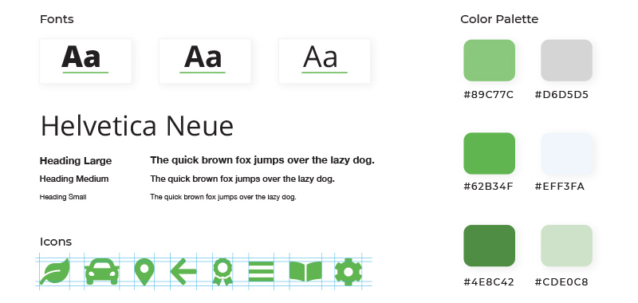
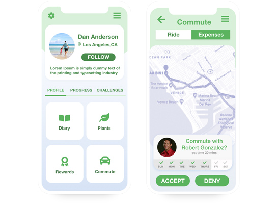

Case Study
Timeline: Jan. 15 - Feb. 2, 2019
-
I sought out to create an intuitive interface that supports people self-monitoring their carbon footprint. Here is what I have created based on my research.
- Design Process
-
- Empathize Understand the user through observation, engagement, and immersion.
- Define Synthesize research into compelling needs and insights.
- Ideate Generate ideas for potential solutions to the problem.
- Prototype Research and build working examples of ideas.
- Test Refine and improve solutions.
- Objectives + Goals
- Empathize with people who would be using the app.
- Create a user interface that helps self-improvement.
- Make tasks on app efficient and intuitive.
- My Role & Tasks
- User Personas
- He would like to reduce the amount of CO2 by carpooling.
- On the go with no time in the morning.
- Needs to sync his carpool with progress.
• User Research • Wireframing • UX/UI Design

Daniel is a 30 year old Business Analyst who carpools daily in Los Angeles. He would like to maintain his carbon footprint.
- Job Stories
- We carpool every day to work and would like to help lower and maintain our CO2 emissions with other people.
- I decided to check out an app that would encourage me to stay on track to reduce my carbon footprint. I genuinely don’t know how much energy I dissipate per day.
- Saving the environment with the ability to receive rewards is important to me.
I used the Job Stories framework to be empathetic of the users and put myself in their shoes to recognize their desired solutions.
- Defining User Story Mapping
- User Activies
- User Tasks
- User Stories


As someone who is always on the go, and on a budget it would be nice to...
• Record progress • Create fun challenges • Obtain rewards • Keep myself and others accountable •
- Site Mapping 
- Wireframing

- Design principles 
- Prototype: Before Testing
- Guerrilla Usability Testing
- Are there any issues users are having navigating the interface?
- Does this violate any of Nielson’s Ten Usability Heuristics?
- Would they be able to accept a carpool ride quickly?
I stopped by a coffee shop to find people who were able to complete a video survey. Without letting the user know, I observed them complete specific tasks. I asked myself the following questions based on this research.
- Design principles

- Defining the Problem based on Observations
- #8: Aesthetic and minimalist design: The profile page must be simplified so that the user would not be overwhelmed.
- #5: Error prevention: We noticed that users had issues with deselecting dates on the previous draft.
- #3: User control and freedom: Mobile users had difficulty confirming or denying rides with people.
After my independent research, I discovered pain points that were crucial to solve for the users. The draft we previously designed was also in violation of three out of ten heuristics.
- Prototype: After Testing 
- Reflections
-
- Learned the importance of user workflow and its importance to a great product.
- How to problem solve friction caused by layout.
- Gained experience on how to test products and observe / understand user pain points.
- Learned how to develop a storyline to empathize with users throughout the whole process.